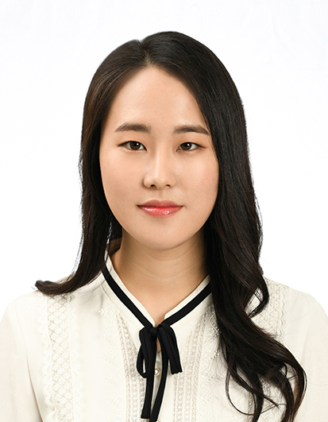

Poster 38-MAT2026 Bay Area Light Sources Joint Users’ Meeting · SLAC, Sep 20–25 — come say hello.
Seonju You
I have developed analysis protocols and automation systems that enable X-ray free-electron lasers to conduct experiments previously thought impossible, using them to observe properties of water never before seen.

Available for postdoctoral positions from March 2027
2020.9 – presentM.S. & Ph.D. joint course, Department of ChemistryPOSTECH, Republic of Korea · Advisor: Prof. Kyung Hwan Kim
2016.3 – 2020.8B.S. in Chemistry and Computer Science & Engineering (double degree)
POSTECH, Republic of Korea · Magna Cum Laude
Representative publications
Experimental evidence of a liquid–liquid critical point in supercooled waterco-first authorS. Youet al.Science391, 1387–1391 (2026) · list [8] doi.org/10.1126/science.aec0018
Observation of a dynamic transition in bulk supercooled waterco-author (3rd)R. Tyburski et al.Nature Physics22, 21–26 (2026) · list [7] doi.org/10.1038/s41567-025-03112-3
Direct observation of radical–arene contact complexes provides structural insights into selectivity in radical reactionsco-author (2nd)S. Lee, S. Youet al.J. Am. Chem. Soc. (2026) · list [11] doi.org/10.1021/jacs.6c11563
Ni–Ir interaction enables a dark reactive state in nickel catalysisco-author (6th)Y. Han et al.J. Am. Chem. Soc.148, 39104–39111 (2026) · list [10] doi.org/10.1021/jacs.6c12462
All 12 journal publications are listed in full below.
On shiftFast data analysis during beamtime and the determination of experimental conditions based on the analysis results; automating experiment execution using LabVIEW and AutoHotkey
Research interests
Enabling research that was previously impossible, based on the most advanced light source facility technology.
X-ray scattering data analysis protocolI design and implement the analysis path from raw detector images to physical answers — for time-resolved X-ray scattering, time-resolved X-ray absorption spectroscopy and XPCS — fast enough to run while the experiment is still running, so the next measurement is decided on shift rather than months later.
Experiment automationI automate the beamtime workflow—which involves changing measurement conditions, handling samples, and processing data—so that beamtime participants can focus on interpreting their experimental results rather than on setup and configuration tasks.
Time-resolved X-ray scatteringI have conducted time-resolved X-ray scattering experiments on systems in various phases, including chemical reactions in solution, liquids, amorphous materials, and crystalline solids.
Revealing the secrets of waterI follow the ultrafast structural dynamics of amorphous ice and deeply supercooled water after laser heating, capturing the transition from the liquid state to crystallization. This research series provides experimental evidence for the existence of a liquid–liquid critical point in bulk supercooled water.
AI application for XFEL experimentThe field I am currently most interested in, and where I hope to grow in the future. I hold a double degree in chemistry and computer science, and I have completed an AI-related internship and an AI-related undergraduate capstone project — the background I intend to build on.
Research skills
X-ray experiment data analysis programs in Python — time-resolved X-ray scattering, time-resolved X-ray absorption spectroscopy, X-ray photon correlation spectroscopy (XPCS)
Analysis performance engineering — multithreaded CPU and GPU-based programming
Automation of experimental setup — LabVIEW, AutoHotkey
Linux server management and security maintenance
MD simulation of water systems with GROMACS
General-purpose software development — C++, C# (Unity), Java
2026 Graduate Student Outstanding Research Paper Award, Dept. of Chemistry, POSTECH
2023 Poster Award, PAL-XFEL Users’ Meeting
2023 Poster Award, Physical Chemistry Division, Korean Chemical Society
2022 Poster Award, Korean Chemical Society (October)
2022 Poster Award, Korean Chemical Society (April)
Scholarships
2021– SBS Foundation Scholarship
2018 Lee In-sook Scholarship, POSTECH
2017 Kim Uk Scholarship, POSTECH
2016–2019 National Excellence Scholarship (STEM), Korea Student Aid Foundation
Journal publications — full list
[12]A. Nilsson*, S. You, K. H. KimComment on “Rethinking the evidence for a liquid–liquid transition in water: What decompression experiments reveal” [J. Chem. Phys. 164, 024506 (2026)]J. Chem. Phys.165, 097101 (2026) doi.org/10.1063/5.0328260
[11]S. Lee, S. You, H. Y. Jo, K. Nam, S. Jeong, Y. Han, M. Shin, J. Oh, M. Ki, K. Park, C. Yang, R. Haruki, R. Fukaya, S. Nozawa, S. Adachi, S. J. Hwang*, K. H. Kim*Direct observation of radical–arene contact complexes provides structural insights into selectivity in radical reactionsJ. Am. Chem. Soc. (2026) doi.org/10.1021/jacs.6c11563
[10]Y. Han†, D. Kim†, S. Jeong†, M. Shin, K. Nam, S. You, S. Lee, K. Park, J. Oh, H. Y. Jo, C. Yang, S. Kim, M. Ki, J. Park, S. Kim, M. Kim, R. Ma, J. H. Lee, S. J. Hwang*, K. H. Kim*Ni–Ir interaction enables a dark reactive state in nickel catalysisJ. Am. Chem. Soc.148, 39104–39111 (2026) doi.org/10.1021/jacs.6c12462
[9]Y. Liu†, T. Eklund†, A. Karina, S. Hövelmann, R. P. C. Bauer, S. You, C. Goy, N. N. Striker, A. Gierke, K. Hess, K. Schlage, L. Bocklage, F. Ardana Lamas, H. Wang, Y. Jiang, Y. Uemura, C. Milne, K. H. Kim, B. Murphy, F. Lehmkühler, P. Zalden, K. Amann-Winkel*Formation of nanoscale vapour films governing thermal resistance in amorphous iceCommun. Chem.9, 289 (2026) doi.org/10.1038/s42004-026-02177-2
[8]S. You†, M. Ladd-Parada†, K. Nam, A. Karina, S. Lee, M. Shin, C. Yang, Y. Han, S. Jeong, K. Park, K. Kim, M. Ki, R. Tyburski, I. Andronis, K. Ralf, J. H. Lee, I. Eom, M. Kim, R. Ma, D. Jang, F. Perakis, P. Poole, K. Amann-Winkel, K. H. Kim*, A. Nilsson*Experimental evidence of a liquid–liquid critical point in supercooled waterco-first authorScience391, 1387–1391 (2026) doi.org/10.1126/science.aec0018
[7]R. Tyburski†, M. Shin†, S. You, K. Nam, M. Soldemo, A. Girelli, M. Bin, S. Lee, I. Andronis, Y. Han, S. Jeong, R. A. Oggenfuss, R. Mankowsky, D. Babich, X. Liu, S. Zerdane, T. Katayama, H. Lemke, F. Perakis, A. Nilsson*, K. H. Kim*Observation of a dynamic transition in bulk supercooled waterNat. Phys.22, 21–26 (2026) doi.org/10.1038/s41567-025-03112-3
[6]C. Yang, M. Ladd-Parada, K. Nam, S. Jeong, S. You, T. Eklund, A. Späh, H. Pathak, J. H. Lee, I. Eom, M. Kim, F. Perakis, A. Nilsson, K. H. Kim*, K. Amann-Winkel*Unveiling a common phase transition pathway of high-density amorphous ices through time-resolved X-ray scatteringJ. Chem. Phys.160, 244503 (2024) doi.org/10.1063/5.0216904
[5]C. Yang, M. Ladd-Parada, K. Nam, S. Jeong, S. You, A. Späh, H. Pathak, T. Eklund, T. J. Lane, J. H. Lee, I. Eom, M. Kim, K. Amann-Winkel, F. Perakis, A. Nilsson*, K. H. Kim*Melting domain size and recrystallization dynamics of ice revealed by time-resolved X-ray scatteringNat. Commun.14, 3313 (2023) doi.org/10.1038/s41467-023-38551-0
[4]K. Amann-Winkel†, K. H. Kim†, N. Giovambattista, M. Ladd-Parada, A. Späh, F. Perakis, H. Pathak, C. Yang, T. Eklund, T. J. Lane, S. You, S. Jeong, J. H. Lee, I. Eom, M. Kim, J. Park, S. H. Chun, P. H. Poole*, A. Nilsson*Liquid–liquid phase separation in supercooled water from ultrafast heating of low-density amorphous iceNat. Commun.14, 442 (2023) doi.org/10.1038/s41467-023-36091-1
[3]M. Ladd-Parada*, K. Amann-Winkel, K. H. Kim, A. Späh, F. Perakis, H. Pathak, C. Yang, D. Mariedahl, T. Eklund, T. J. Lane, S. You, S. Jeong, M. Weston, J. H. Lee, I. Eom, M. Kim, J. Park, S. H. Chun, A. NilssonFollowing the crystallization of amorphous ice after ultrafast laser heatingJ. Phys. Chem. B126, 2299–2307 (2022) doi.org/10.1021/acs.jpcb.1c10906
[2]K. H. Kim†, K. Amann-Winkel†, N. Giovambattista, A. Späh, F. Perakis, H. Pathak, M. Ladd-Parada, C. Yang, D. Mariedahl, T. Eklund, T. J. Lane, S. You, S. Jeong, M. Weston, J. H. Lee, I. Eom, M. Kim, J. Park, S. H. Chun, P. H. Poole*, A. Nilsson*Experimental observation of the liquid–liquid transition in bulk supercooled water under pressureScience370, 978–982 (2020) doi.org/10.1126/science.abb9385
[1]S. You, H.-G. Lee, K. Kim, J. Yoo*Improved parameterization of protein–DNA interactions for molecular dynamics simulations of PCNA diffusion on DNAfirst authorJ. Chem. Theory Comput.16, 4006–4013 (2020) doi.org/10.1021/acs.jctc.0c00241
† equal contribution · * corresponding author ·
also on ORCID.